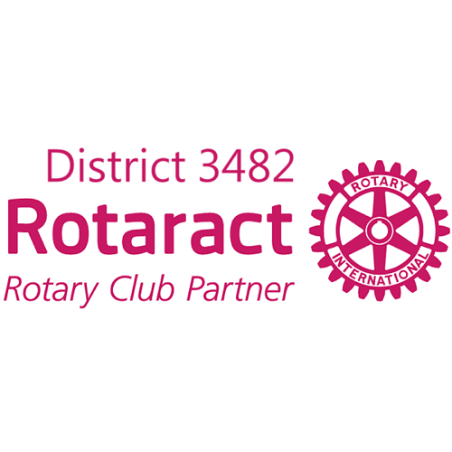
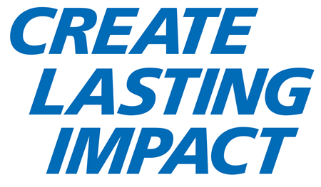

在 2026-27 年度，我們聚集台北 17 個獨具特色的扶青社，透過「學術商務、社會服務、新創科技、國際多元與藝術聯誼」，賦能青年、連結輔導社豐沛資源，共創發揮卓越影響力的新紀元。
扶輪青年服務社（簡稱扶青社）是由國際扶輪所輔導的青年服務組織，聚集 18 至 30 歲的熱血青年。在 3482 地區，我們強調資源共享、跨界合作與自我增能，引領青年在服務中實踐抱負。
對接輔導扶輪社優秀企業家與高階經理人資源，提供職涯導師、技能工作坊及模擬面試，加速青年職場接軌與創業實力。
從海洋環保淨灘、銀髮代間關懷，到清寒偏鄉少兒閱讀輔導，讓青年運用專業技能解決社區真實需求，共創美好社會。
暢通全球姐妹社連結渠道，舉辦跨國聯合例會，贊助代表參與亞太扶青會議 (APRRC)，培育具備世界胸懷的國際青年。
學習卓越的非營利組織經營運作，培養專案企劃、溝通談判與群眾領導力，並在生活美學與聯誼中結交一生的摯友。
台北地區 17 個扶青社，各具獨特氣質與特色定位。您可以依據您的興趣標籤或例會時間進行探索，尋找最契合的專屬社群！
我們為您量身打造的趣味性分析問答。只需回答 4 個生活偏好問題，即可透過智慧推薦演算法，分析出最符合您興趣與氣質的 3 個扶青社團！
面對 17 個各具千秋的活力社團感到選擇障礙？
別擔心！這項測驗將從「生活作息、期待收穫、偏好人際、身份背景」四個層面，
科學比對您的特質，精準引薦最懂您的溫暖大家庭！
國際扶輪 3482 地區全年度重大聯誼、講習培訓與聯合社會服務行事曆。歡迎所有社員及外部優秀青年共襄盛舉！
填寫下方諮詢意願表，我們將主動為您對接有興趣的社團秘書長，邀請您免費參與最近一次的社團例會，親自感受扶青大家庭的無窮魅力！
感謝提供資源與扶青發展基金之共同推動單位，引領青年發揮持恆影響力
Rotary International District 3482
Rotaract District Grant Committee